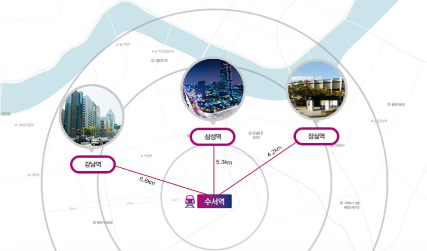

역안내
수서역

- 
오시는 길
- 버스이용시
[일반] 101 , [간선] 402 , [지선] 2412, 3416, 3425, 3426, 4419 , [마을] 강남03, 강남06, 강남06-1
※탑승 후 ‘쟁골마을’ 정류장 하차
[일반] 101 , [지선] 2412, 3416 , [직행] 1007, 1007-1, 5600, 5700, 6900,
- 지하철이용시
수인분당선-3호선 수서역에서 하차 후 환승통로 이용
- 자가용이용시
수서IC에서 밤고개로(0.6km)→광평로(0.2km)→광평로56길(0.2km) <약 4분 소요>